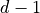
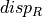

Stereo correspondence: step by step¶
The following sections describe Pandora’s stereo matching steps.
Matching cost computation¶
The first step is to compute the cost volume containing the similarity coefficients. Different measures of similarity are available in Pandora :
SAD (Sum of Absolute Differences)
SSD (Sum of Squared Differences)
Census 1
ZNCC (Zero mean Normalized Cross Correlation)
It is possible to oversample the cost volume by a factor of 2 or 4 ( with the subpix parameter ) compared to to the input images. It can be useful for Disparity refinement
Pandora can take into account a mask and a nodata value for each image. The masks and nodata are used during the matching cost computation :
Nodata pixel management: if the reference window contains nodata, the center pixel of the window is invalidated. Therefore,the disparity range is invalidated : . If the secondary window contains nodata, the center pixel is invalidated. As a result, the pixels of the reference image such as , are invalidated
Management of hidden pixels: if the center pixel of the reference window is hidden, the disparity range is invalidated : . If the pixel in the center of the secondary window is hidden, the pixels of the reference image such as are invalidated
Cost Aggregation¶
The second step is to aggregate the matching costs:
Cross-based Cost Aggregation 2. This method consists in creating aggregation support regions that adapt to the structures present in the scene.
Optimisation¶
The third step is to minimize a global energy defined by
First term, called data term represents raw matching cost measurement. The second one, the smoothness term, represents smoothness assumptions made by the algorithm.
The methods available in Pandora are
Semi-Global Matching 5, made available by plugin_libsgm and libsgm.
Disparity computation¶
This step looks for the disparity for each pixel of the image that produces the best matching cost: it’s called the Winner Takes All strategy.
The disparity calculated by Pandora is such that:
avec ,  the reference image (left image) and the secondary image (right image), and
the reference image (left image) and the secondary image (right image), and
 the disparity.
the disparity.
Disparity refinement¶
The purpose of this step is to refine the disparity identified in the previous step. it consists in interpolating the coefficients of similarity.
Note
The cost volume disparity dimension is sampled at the input images rate by default. Thus disparities tested are integers. However, to prevent from aliasing effects when refining the disparity map, one can use the subpix parameter. This will add subpixel disparities into the cost volume by oversampling the disparity dimension by a factor 2 or 4.
The available interpolation methods are :
Vfit 4, consists in estimating a symmetrical form V from 3 points: the disparity
identified at
the previous step as well as  and with their costs. The following figure
represents the function to be estimated :The interpolation is given by the following formula, where
 the matching cost, and
the matching cost, and  the slope :
the slope :Quadratic, consists in estimating a parabola from 3 points: the disparity
identified at
the previous step as well as and with their costs. The following figure
represents the function to be estimated :
{kind=link}
{kind=link}
Validation and filtering of the disparity map¶
The last step is to apply post-treatments to the disparity map.
The filtering methods allow to homogenize the disparity maps, those available in pandora are :
median filter. The median filter is applied to the valid pixels of the disparity map, invalid pixels are ignored.
bilateral filter.
Validation methods provide a confidence index on the calculated disparity, those available in pandora are
The cross checking ( cross checking 3 ), which allows to invalidate disparities. It consists in reversing the role of the images (the reference image becomes the secondary image, and vice versa) and to compare the disparity (corresponding to the reference image ) with  (corresponding to the secondary image
) :Si , then point p is valid
Si , then point p is invalid
The threshold is 1 by default, but it can be changed with the cross_checking_threshold parameter. Pandora will then distinguish between occlusion and mismatch by following the methodology outlined in 5. For each pixel p of the reference image invalidated by the cross-checking :
If there is a disparity d such as , it is a mismatch.
Otherwise, it’s an occlusion.
Note
Cross checking does not modify the disparity map, it only informs bits 8 and 9 in the validity mask.
Note
When a validation step is set, it is possible to calculate the secondary disparity map by reversing the role of the images.
It is possible to fill in occlusions and mismatches detected during cross-validation:.
using the method proposed in 6 : the disparity of a occluded pixel is modified using the first valid disparity from the left. The disparity of a pixel considered as a mismatch becomes the median of the first 16 valid pixels in the directions shown below (note: these directions are not related to the libSGM ):
using the method proposed in 5 : the disparity of an occluded pixel is modified using the second method in 5 : Smallest disparity (the disparity closest to 0) in 8 directions. The disparity of a pixel considered to be a mismatch becomes the median of the first 8 valid pixels in the directions shown below. Mismatches that are direct neighbours of occluded pixel are treated as occlusions.
{kind=link}
{kind=link}
Note
The parameter interpolated_disparity is used to select the method to correct occlusions and mismatches.
- 1
Zabih, R., & Woodfill, J. (1994, May). Non-parametric local transforms for computing visual correspondence. In European conference on computer vision (pp. 151-158). Springer, Berlin, Heidelberg.
- 2
Zhang, K., Lu, J., & Lafruit, G. (2009). Cross-based local stereo matching using orthogonal integral images. IEEE transactions on circuits and systems for video technology, 19(7), 1073-1079.
- 3
Fua, P. (1993). A parallel stereo algorithm that produces dense depth maps and preserves image features. Machine vision and applications, 6(1), 35-49.
- 4
HALLER, István, PANTILIE, C., ONIGA, F., et al. Real-time semi-global dense stereo solution with improved sub-pixel accuracy. In : 2010 IEEE Intelligent Vehicles Symposium. IEEE, 2010. p. 369-376.
- 5(1,2,3,4)
HIRSCHMULLER, Heiko. Stereo processing by semiglobal matching and mutual information. IEEE Transactions on pattern analysis and machine intelligence, 2007, vol. 30, no 2, p. 328-341.
- 6
ŽBONTAR, Jure et LECUN, Yann. Stereo matching by training a convolutional neural network to compare image patches. The journal of machine learning research, 2016, vol. 17, no 1, p. 2287-2318.